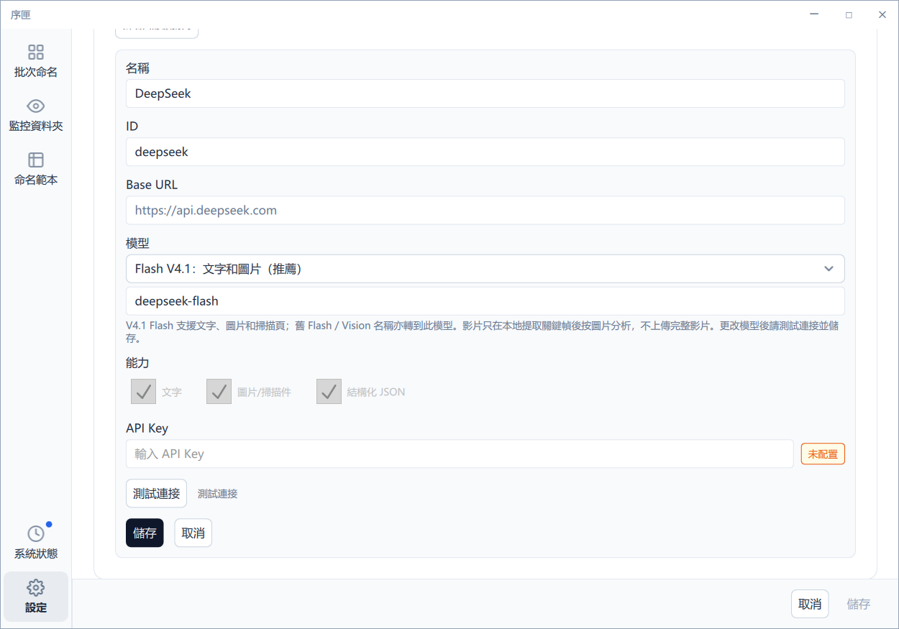
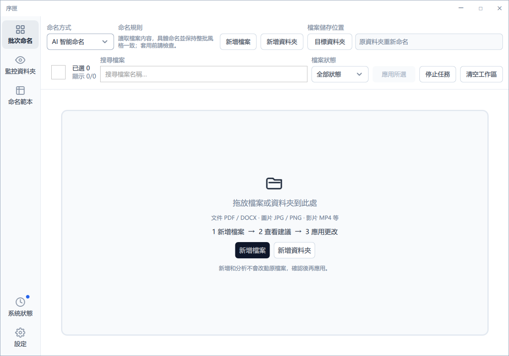
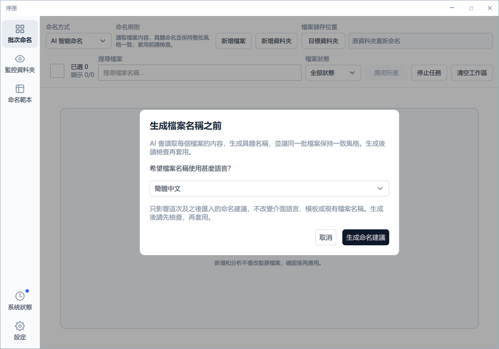
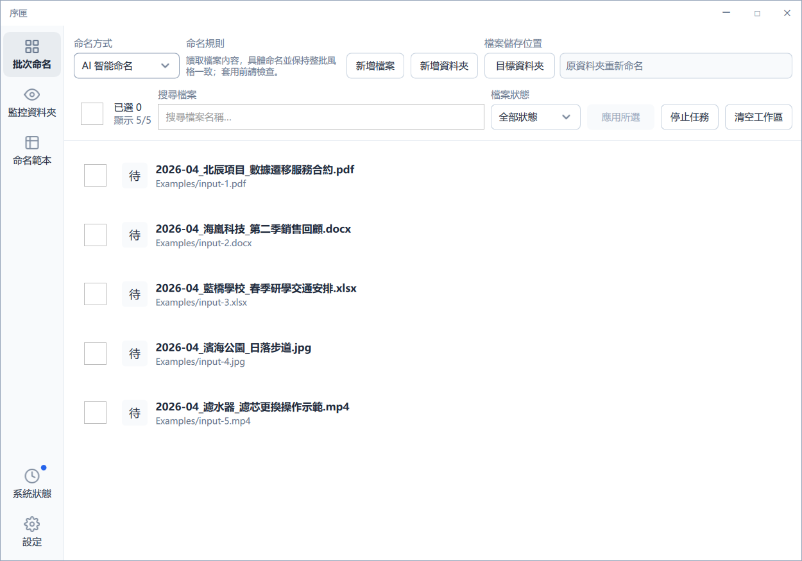
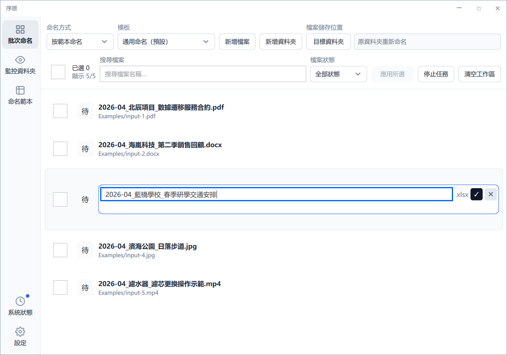
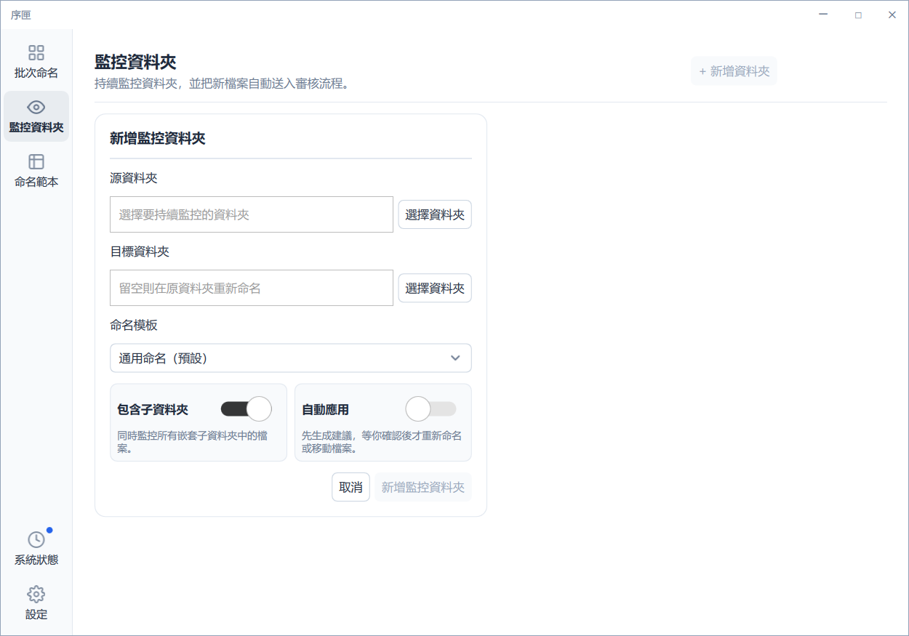
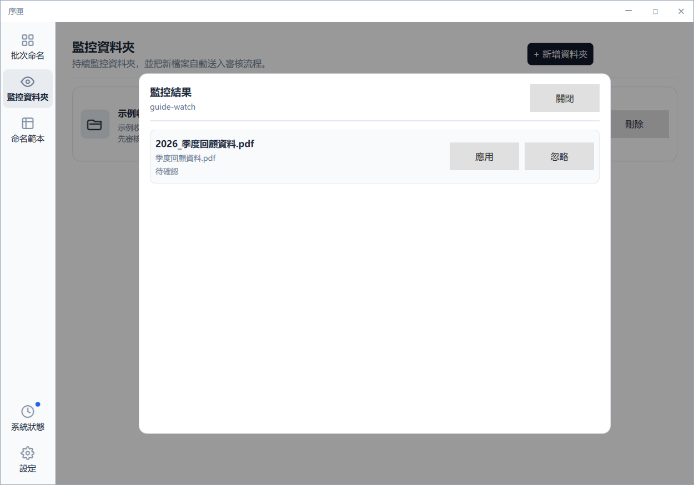
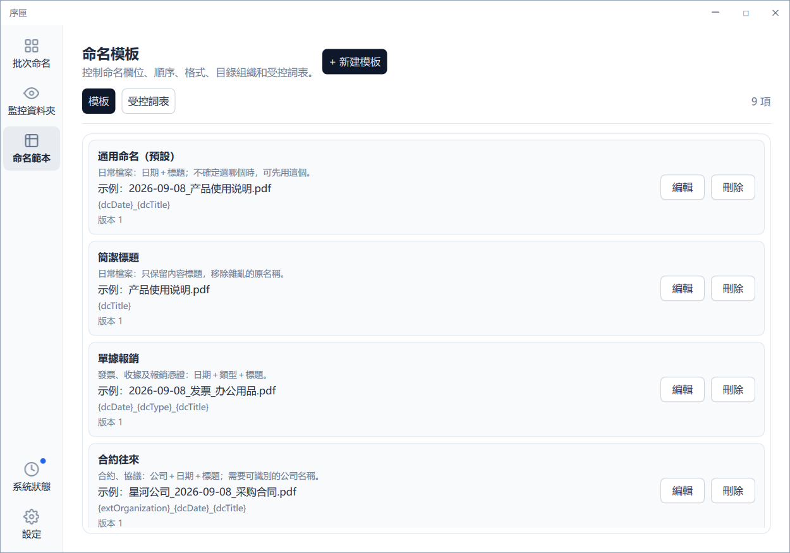
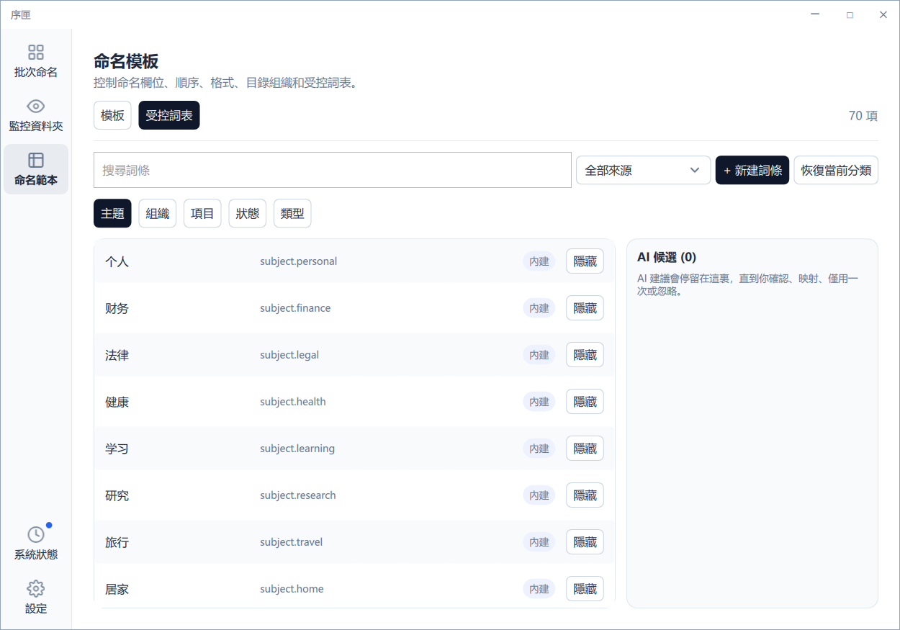
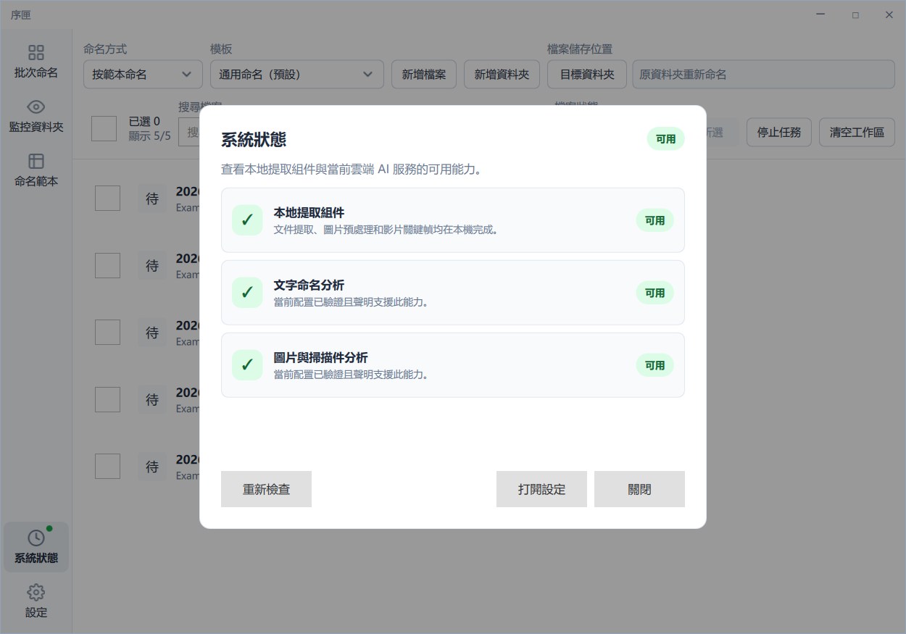

1. 認識序匣
序匣適合整理下載資料、單據、項目文件、相片、掃描檔和影片素材。它把「產生建議」與「修改檔案」分開：只有獲准的應用操作才會把名稱寫入磁碟。
它可以做甚麼
- 讀取支援檔案的文字、中繼資料和可用視覺內容。
- 透過已就緒的本機模型，或您明確選擇的雲端 AI Provider 取得結構化欄位或有依據的智能名稱。
- 按範本組合精確欄位，或按上下文產生具體摘要；兩種模式均可手動修改。
- 逐一重新命名或移動檔案，並保存成功操作的撤銷（Undo）記錄。
- 監控指定資料夾，把新檔案送往先審核或受保護的自動處理流程。
它不會暗中做甚麼
- 匯入、擷取、產生或編輯建議時，不會修改磁碟上的檔案名稱。
- 不會要求同時設定多個 Provider。
- 不會把 API Key 寫入一般設定檔。
- 不會為視覺分析上載完整影片。
- 不會把「清空工作區」當作撤銷（Undo）。
2. 開始之前
- 確認環境。使用支援的 Windows 桌面系統，並確保目前 Windows 帳戶可讀寫來源及目的資料夾。
- 選擇處理方式。本機私隱毋須 Provider 帳戶或測試連線，先按本機章節準備資源。只有雲端 AI 才需要向服務商取得 API Key、可用模型名稱及 Base URL，能力須配合內容。
- 準備網絡或離線資源。掃描、文字擷取、關鍵影格和檔案操作在本機進行；雲端請求須連接所選 Provider。首次下載公開本機資源仍須另行同意聯網，也可匯入規定的離線資源。
- 啟動程式。開啟安裝資料夾內的
Xuxia.exe，毋須安裝開發工具或使用命令列。
3. 設定雲端 AI
本章只適用於雲端 AI；本機私隱毋須設定雲端帳戶。雲端同一時間只使用一個目前 Provider。您可以保存多個候選設定，但雲端處理只採用明確標示為目前使用的設定。
- 開啟左側導覽底部的設定。
- 選擇內置 Provider 預設，或以 Custom 新增相容服務。
- 輸入服務商提供的 Base URL、模型名稱和 API Key，並移除多餘空格。
- 選擇測試連線；固定的最小請求會核對地址、認證和模型存取權。
- 測試成功後儲存並設為目前 Provider。連線欄位變更後須再次測試。
| 能力標籤 | 意思 | 不支援時 |
|---|---|---|
| 文字 | 可使用文件擷取文字及中繼資料 | 不能根據該文件內容命名 |
| 圖片／掃描檔 | 可接收縮小圖片或本機轉譯掃描頁 | 只使用本機文字及中繼資料，或改用相容 Provider |
| 結構化輸出 | 可傳回命名策略要求的受限資料 | 任務顯示失敗或能力問題，不會假裝成功 |
| 影片 | 可把本機選取的影片影格當作圖片分析 | 不能分析畫面，也不會改為上載完整影片 |

5. 五分鐘快速上手
- 進入批次命名，選擇按範本命名或 AI 智能命名。每次新工作階段的預設仍是按範本命名。
- 另在標題下的處理列確認雲端 AI 或本機私隱。本機須先完成資源準備並達到 READY；雲端須先完成連線設定。兩種處理方式都支援兩種命名模式。
- 範本模式要選取範本；智能模式不要求通用欄位範本。如需移動檔案，再選目的資料夾。
- 拖入檔案，或選擇新增檔案／資料夾。確認檔案名稱語言後才會匯入；資料夾可遞迴掃描。
- 等候建議，比對粗體建議名稱和灰色原名。使用鉛筆修改；不合法名稱會顯示行內錯誤。
- 應用一個已審核項目，或勾選多項後使用頂部 應用。系統仍逐一處理，所以可能部分成功。
- 結果不合適時使用撤銷（Undo）還原最近合資格操作；清空工作區不會逆轉改名或移動。
6. 批次命名
匯入與工作區
批次命名可同時匯入多個檔案或資料夾。暫存檔、已知不支援格式和重複項目會被略過，介面會顯示各類數量。匯入後的項目以全寬卡片顯示，並保留匯入當刻的命名選項。
按範本命名與 AI 智能命名
按範本命名
所選模型擷取範本指定的精確欄位，序匣再按固定欄位次序、日期格式及分隔符組合名稱。適合單據、合約、項目或其他欄位穩定的資料。
AI 智能命名
所選模型根據檔案上下文提出具體、可辨識的短摘要；同一策略令同一批次的內容次序、日期語法及底線格式一致。智能模式不是包含所有欄位的萬用範本。
切換模式只影響之後匯入的任務；已匯入任務不會隨工具列切換而改變。重新嘗試始終保留匯入時的模式及檔案名稱語言。返回範本模式不會刪除所選範本。已有範本、預設範本和監控資料夾設定不會被遷移或改寫；監控仍使用其原有範本。

檔案名稱語言
介面及手冊提供簡體中文、繁體中文（香港）和英文三種語言；新批次的檔案名稱另可選日文及西班牙文，共五種。範本模式可沿用範本；智能模式必須選擇實際語言，不會把「沿用範本」當作有意義選項。
取消不會匯入或呼叫 AI。選擇只套用到新任務，不會改寫範本、已有任務、建議或磁碟檔案。重新嘗試沿用任務的語言；公司專名及編號可能合理地保留原文。

工具列、任務卡和操作
- 模式與範本：模式決定命名策略；範本選擇只在範本模式有關。
- 繼續新增：保留目前佇列，同時匯入更多項目。
- 目的地：留空代表原地改名；選擇資料夾代表改名並移動。
- 搜尋及狀態篩選：只收窄可見卡片，不會刪除隱藏任務。
- 選取：列勾選框及全選決定下一次批次操作範圍，應先核對數量。


停止待處理任務會取消未完成項目。已送往 Provider 的請求可能仍然返回，但已取消任務不會被報告為成功應用。應用 會分別顯示成功和失敗；一個檔案失敗不會回復同批已成功的檔案。
可讀內容不足、回應格式無效、名稱太籠統、細節沒有依據、語言不符、不安全名稱或策略版本不支援，都會成為可見失敗。序匣不會聲稱已理解或虛構後備名稱。首次失敗不會產生可編輯建議，不能編輯不存在的名稱；請修正內容或 Provider 後重新產生。重新嘗試始終保留匯入時的模式及檔案名稱語言。若要改用範本模式，先從工作區移除失敗任務，再按新模式重新匯入；只切換工具列模式不會改變舊任務。
智能檔案名稱主體上限為 180 個 UTF-16 單位；過長結果會被拒絕，序匣不會截斷成看似完整的名稱。模擬測試只證明驗證、佇列及錯誤映射等軟件合約，不能證明真實模型總能辨認具體事實或提供可靠證據。只有成功產生的建議才可在應用前編輯和檢查。
合成例子：2026-09-08_星河公司_網站改版_需求評審_V2.docx、海港日落_低角度逆光_慢鏡頭.mp4。範例為合成示範結果，不是真實模型截圖，也不是輸出品質保證。
清空工作區不會撤銷（Undo） 已寫入磁碟的改名或移動，只會移除頁面上的任務記錄。
返回頁首7. 任務狀態
| 狀態 | 意思 | 一般操作 |
|---|---|---|
| 待處理 | 已排入佇列，尚未擷取或分析 | 取消或忽略 |
| 分析中 | 正在擷取內容或請求所選本機模型／目前雲端 Provider | 取消 |
| 待確認 | 建議已產生，需要人工審核 | 編輯、應用、重新產生或忽略 |
| 已撤銷 | 先前成功應用已由撤銷（Undo）還原 | 需要時重新處理 |
| 已應用 | 檔案已在磁碟改名或移動 | 撤銷（Undo） |
| 失敗 | 擷取、AI、驗證或檔案操作失敗 | 閱讀原因、修正並重試 |
| 已取消 | 使用者停止未完成工作 | 重新匯入或重試 |
| 已忽略 | 使用者明確排除該項目 | 需要時恢復處理 |
「全部」是篩選檢視，不是第九種任務狀態；篩選不會修改檔案或暗中刪除記錄。
返回頁首8. 監控資料夾
- 進入監控並選擇新增資料夾。
- 選擇來源、可選目的地和命名範本。
- 決定是否包括子資料夾。
- 選擇 先審核 或 自動應用。
- 儲存並啟用；新檔案停止寫入並穩定後才進入流程。
先審核
建議進入獨立審核佇列，只有明確批准的檔案才寫入磁碟，適合重要資料及新範本。
自動應用
建議通過信心、資源、路徑、衝突及檔案版本檢查後才自動應用；失敗保持可見，不會把部分失敗說成全部成功。


序匣會等待檔案寫入穩定、合併短時間內重複事件，並略過常見暫存檔。來源和目的資料夾關係會被驗證，防止序匣移出的檔案再次觸發相同監控。
監控與批次共用頂部處理選擇和同一個受管理本機服務，不會因改變處理方式而改寫監控範本。部分或未知覆蓋、內容不足或本機未就緒時，自動應用會保守保留，不會強行改名；請閱讀原因並先審核。
- Paused：使用者手動暫停，可在準備好後恢復。
- ResourcePaused：本機佇列、並行數或連續失敗護欄啟動；先處理原因再恢復。
- Error：監察器、路徑或權限錯誤；修復後重試。
9. 命名範本與受控詞彙


命名範本入口包含「範本」及「受控詞彙」兩個分頁，不會增加另一個左側主導覽入口。
| 範本 | 用途／必要資料 | 合成例子 |
|---|---|---|
| 通用命名（預設） | 一般檔案：日期＋標題 | 2026-09-08_產品指南.pdf |
| 簡潔標題 | 只保留內容標題 | 產品指南.pdf |
| 單據報銷 | 日期、類型及標題 | 2026-09-08_發票_辦公用品.pdf |
| 合約往來 | 機構及日期 | 星河公司_2026-09-08_採購合約.pdf |
| 項目資料 | 項目、日期及標題 | 網站改版_2026-09-08_需求說明.docx |
| 學習資料 | 主題及標題 | 英文學習_閱讀筆記.pdf |
| 論文文獻 | 作者、年月及標題 | 陳大文_2026-09_圖像辨識.pdf |
| 相片與影片 | 主題、日期、視覺標題；需要視覺能力 | 旅行_2026-09-08_海港日落.jpg |
| 版本文件 | 項目、標題及明確版本 | 網站改版_設計方案_V2.docx |
範本可編輯；升級不會覆寫現有範本或重建已刪除的預設。選範本不會修改磁碟，原副檔名保持不變。如缺少機構、項目、作者或版本等必要依據，序匣不能虛構；應改用較簡單範本或提供可讀內容。
| 欄位 | 用途 | 必要但缺失時 |
|---|---|---|
| dcDate | 文件日期 | 項目需要重新產生或審核，不能暗中成為可應用的殘缺名稱。 |
| dcTitle | 核心標題 | |
| dcSubject | 主題 | |
| dcType | 類型 | |
| dcCreator | 作者 | |
| dcIdentifier | 識別碼 | |
| extOrganization | 機構 | |
| extProject | 項目 | |
| extStatus | 狀態 | |
| extVersion | 版本 |
可調整欄位次序、日期格式、分隔符、輸出語言及平面或分類整理。預設範本若已刪除，設定頁會阻止儲存並要求重選，不會暗中換成另一個。
subject、organization、project、status 及 type 詞彙可以搜尋、篩選、新增、編輯及刪除。AI 候選不會自動污染正式詞彙：只用一次、審核後接受，或拒絕。
返回頁首10. 圖片、掃描檔和影片
圖片：序匣在本機修正方向、處理透明度並限制尺寸，再把縮小圖片交給已就緒的本機視覺模型，或在雲端模式交給具視覺能力的 Provider。原始高解像度檔案不會因分析被修改。
掃描 PDF：有文字層時優先擷取文字；掃描頁在安全頁數上限內於本機轉譯，再以縮小圖片分析，超出上限不會無限制處理。
影片：序匣在本機依次序選取代表性關鍵影格，再把影格當圖片分析。經濟、均衡及高品質模式通常約用 4、6、8 幀，並受設定護欄限制。序匣不會上載完整影片。
11. 資源限制、快取與用量
這些設定限制本機工作和請求大小，並非第三方 Provider 的收費預測。
| 設定 | 控制內容 | 建議 |
|---|---|---|
| 最大檔案大小 | 阻止過大檔案分析；範圍 1–500 MB | 先使用預設值 |
| PDF 頁數上限 | 限制掃描頁轉譯及傳送 | 使用足以代表內容的頁數 |
| 影片影格上限 | 限制本機擷取和視覺請求 | 一般素材毋須超過高品質預設 |
| 並行上限 | 限制同時分析數量 | 網絡或電腦較慢時降低 |
| 重試上限 | 限制可重試網絡或服務錯誤 | 認證錯誤應修正而非一直重試 |
經濟、均衡和高品質主要調整圖片大小、影格數、請求規模及所需模型能力，不是「基本、專業、完美」的品質承諾。
設定提供本機快取狀態及清理入口，快取組件可供相容流程使用；但目前 AI 智能命名的批次分析流程不會讀取或寫入命名建議快取。不要從快取介面推斷智能建議已被快取；重新產生仍會按目前任務進行分析。
本機與雲端快取分區；清理建議快取不等於刪除本機模型資源，也不是釋放記憶體或卸載服務的承諾。資源準備狀態與非貨幣用量是不同資訊。
用量可顯示 Provider、請求次數、輸入及輸出 Token。沒有記錄時顯示空白狀態；資料不可用時明確說明，不會虛構為零。
返回頁首12. 私隱與資料流程
| 內容 | 本機處理 | 只在雲端模式可能傳送至目前 Provider |
|---|---|---|
| 文件或試算表 | 擷取文字及中繼資料 | 必要文字、中繼資料及命名上下文 |
| 圖片 | 方向、透明度及縮放處理 | 縮小圖片及必要中繼資料 |
| 掃描 PDF | 在上限內轉譯頁面 | 縮小掃描頁圖片及必要上下文 |
| 影片 | 本機選取約 4–8 個有序關鍵影格 | 影格圖片及摘要上下文；不包括完整影片 |
- API Key 只應進入系統憑證儲存及實際請求層，不應出現在一般日誌或診斷套件。
- Provider 載荷使用擷取結果、縮小圖片或關鍵影格，不應包含完整來源路徑。
- 診斷資料會遮蔽使用者名稱、磁碟路徑、網絡共享路徑和疑似憑證值。
- 保存期限、訓練政策和地區合規由所選 Provider 控制，請查閱該帳戶的目前設定及條款。
- 本機承諾只約束序匣，不控制其他應用程式或作業系統同步，也不表示整部電腦沒有聯網；受管理子程序沒有網絡能力，不以任意本機連接埠作私隱證明。
- 本機日誌和診斷不記錄檔案內容、金鑰或來源路徑；分享前仍應檢查。沒有隱藏遙測或失敗後暗中轉雲端。
13.撤銷（Undo）與檔案安全
- 匯入、擷取、產生建議及手動編輯建議不會寫入磁碟名稱。
- 應用 及 自動應用會執行實際重新命名或移動。
- 撤銷（Undo）按反向次序還原最近仍合資格的成功記錄。
執行前保護
- 副檔名：建議不能把原副檔名換成另一類型。
- 路徑界線：目的地必須留在允許資料夾內，連結及相似前綴不能繞過檢查。
- 檔案版本：分析後大小或修改時間有變，舊建議不能套用到新內容。
- 衝突：已有目標會安全編號或報告失敗，不會靜默覆寫。
- 逐檔結果：每個檔案有獨立結果，並綁定正確任務及批次。
- 同一磁碟區限制：應用及撤銷目前只支援同一磁碟區。跨磁碟區移動會安全失敗並保留來源檔案，不會改為複製後刪除；資料夾連結、不安全身份、副檔名變更或被佔用目標均拒絕，不覆寫已有檔案。
關閉或清空工作區不會逆轉磁碟操作，也不能代替撤銷（Undo）。成功及失敗的還原結果會逐項顯示。
返回頁首14. 診斷與疑難排解
| 現象 | 常見原因 | 處理 |
|---|---|---|
| 認證失敗 | Key、模型、權限或地址錯誤 | 重新複製、確認帳戶權限並再測試 |
| 429 或暫時錯誤 | Provider 限流或暫停服務 | 等候退避、降低並行，不要無限重試 |
| 逾時 | 網絡、代理、地址或服務狀態 | 恢復目前 Provider 連線後再測試 |
| 沒有視覺建議 | 沒有圖片能力或觸及本機上限 | 閱讀任務原因，改用 Provider 或調整安全上限 |
| 智能名稱籠統或無依據 | 內容不足或回應無效 | 修正後重新產生；要換範本模式，移除失敗任務後按新模式重新匯入 |
| 智能名稱過長 | 主體超過 180 個 UTF-16 單位 | 重新產生；首次失敗沒有可編輯名稱，也不會自動截斷 |
| 來源已改變 | 分析後由外部程式修改 | 重新分析目前內容 |
| 衝突或檔案被佔用 | 目標已存在或由其他程式鎖定 | 關閉程式、改目的地或接受安全編號 |
| ResourcePaused | 佇列、並行或連續失敗護欄 | 解決原因後才恢復 |

在設定匯出診斷套件，分享前先自行檢查。套件用於設定結構、組件狀態及錯誤類別，不應包含 API Key。
15. 支援格式
副檔名不代表檔案必定完整或真實；損壞、加密或偽裝格式仍可能無法擷取。
| 類別 | 副檔名 |
|---|---|
| 文件及試算表 | PDF, DOC, DOCX, PPT, PPTX, XLS, XLSX, TXT, MD, CSV, TSV, RTF, HTML, XML, EPUB, ODT, ODS, ODP |
| 圖片 | JPG, JPEG, PNG, WebP, GIF, BMP, TIF, TIFF, AVIF |
| 影片 | MP4, MOV, M4V, MKV, AVI, WebM, TS, MTS, M2TS, WMV, FLV, 3GP, 3G2, MXF, MPG, MPEG, OGV |
可匯入不等於所選模型可理解視覺內容。序匣先嘗試本機擷取，再按本機就緒狀態或雲端 Provider 能力選擇相容路線，或顯示降級原因。
返回頁首16. 常見問題
是否必須使用某個 Provider？
雲端不是。預設或相容 Custom Provider 均可使用，前提是模型、地址、權限及結構化輸出能力配合任務。本機首版則固定使用本機章節的 Qwen 模型，不接受任意模型。
為何產生建議後沒有改名？
這是安全合約。建議產生及編輯不寫入磁碟；先審核 需要明確 應用。
兩個命名模式有何分別？
範本模式擷取精確欄位並組合指定公式；AI 智能命名按上下文產生簡潔具體摘要，並遵守一致政策。它不是萬用範本，而範本模式仍是預設。
切換介面語言會翻譯檔案名稱嗎？
不會。介面、手冊及檔案名稱語言彼此獨立；批次匯入時才選擇名稱語言，已有任務及磁碟檔案不會重寫。
圖片可匯入但不能辨識？
本機先檢查服務是否就緒；雲端檢查目前 Provider 圖片能力，再核對大小、頁數及影格上限。文字能力不能代替視覺理解。
為何監控沒有自動應用？
可能使用先審核、檔案尚未穩定，或信心、資源、路徑、衝突及版本檢查阻止操作。
怎樣還原已改名檔案？
使用撤銷（Undo）。外部修改、佔用或路徑衝突可令個別還原失敗。
序匣是否包括 Provider 額度？
不包括。序匣不提供雲端額度或金額帳單；第三方帳戶由該服務管理，程式只記錄非貨幣請求用量。
返回頁首17. 版本與支援界線
本手冊說明序匣 1.0.0 Windows 桌面版及目前正式入口可見行為。
- 首個版本是個人單機工具，不包括帳戶登入、團隊協作、雲端同步、付款、授權或自動更新服務。
- 介面及手冊提供簡體中文、英文和繁體中文（香港）；取消語言預覽會回復最近儲存的介面語言。
- 批次檔案名稱另支援日文及西班牙文，但不代表程式提供日文或西班牙文介面。
- Provider 名稱、模型目錄和地址可以改變；請使用目前可用、能力匹配並通過測試連線的設定。
- 本手冊完全本機化，不使用網絡字體、腳本、翻譯服務或 CDN；列印只包含目前開啟的語言。
如介面與手冊不同，先確認程式版本，再報告入口、準確步驟、任務狀態及已脫敏錯誤類別。
返回頁首18. 本機私隱與資源準備
兩個獨立選擇：如何命名，在哪裏分析
按範本命名／AI 智能命名決定命名策略；雲端 AI／本機私隱決定處理位置。兩種處理方式都支援兩種命名模式，不會改寫已有範本或預設範本。介面語言與匯入時確認的檔案名稱語言也互相獨立。
在標題列下方的永久處理列選擇本機私隱；批次命名與監控資料夾共用這個選擇。選擇 LOCAL 會立即阻止之後的新雲端請求，即使資源缺失、正在準備、失敗、暫停或取消也一樣。已送出的雲端請求無法收回。本機失敗不會自動退回雲端；只有明確選擇雲端 AI 才重新開放新的雲端請求。
首次使用：先檢查，再明確授權
- 先選本機私隱，再開啟設定 → 通用，向下找到本機資源卡片。按檢查資源只檢查已有狀態，不會開始下載或執行模型。
- 閱讀模型、固定版本、資源位置、來源主機及已驗證、已取得和剩餘傳輸位元組。首版本機模型為 Qwen/Qwen3.5-4B 指令模型，使用 Q4_K_M 和視覺投影資源；執行環境為 Windows x64 CPU llama.cpp b10885，不是 Base 模型或雲端 Qwen API。
- 如要聯網取得資源，按下載並啟用。此步只展開可見同意說明；再按同意，下載公開資源才開始下載。固定公開來源主機為
github.com及huggingface.co，不傳送文件、名稱、路徑、命名提示或金鑰。可按「暫不下載」拒絕。 - 不授權下載時，可按匯入離線資料夾，選擇含規定固定檔案集合的資料夾：
llama-b10885-bin-win-cpu-x64.zip、Qwen3.5-4B-Q4_K_M.gguf及mmproj-F16.gguf，必須符合固定版本、大小及校驗值。這不是任意模型、執行檔或自訂目錄清單入口；匯入只讀取及驗證，不會改動原資料夾。 - 已有資源時，按準備已有資源重新驗證，啟動與批次及監控共用的受管理服務，並進行實際自我檢查。毋須命令列、開發工具或自行啟動伺服器。驗證後可重用離線資源，不必重複下載。
- 等候頂部處理列顯示本機私隱已啟用，服務自檢通過（READY），再匯入少量可還原檔案。逐一核對建議、證據和覆蓋提示，確認後應用；未就緒時先解決資源狀態，不要把「資源可用」當成「模型已啟用」。
容量、速度和狀態均不是保證
固定資源共 3431786583 位元組，約 3.43 GB（十進制），包括隨程式提供的 18425079 位元組執行環境 ZIP。重用資源之前，模型及視覺資源的遠端傳輸上界為 3413361504 位元組；解壓另增加 46749981 位元組，每次執行還需要暫存空間。因此資源總數不是精確的所需可用空間，請按卡片位置、提示及實際磁碟餘量預留空間。
資源存於目前作業系統使用者的資料目錄 Xuxia/local-ai，與程式目錄分開；以卡片顯示的位置為準。數字是上次驗證、觀察或估算的快照；已接收位元組不等於已驗證或保證保留，「剩餘」也不是最終保留空間。硬件准入檢查不是效能保證，不承諾統一的最低記憶體、啟動時間或處理速度。首次準備和模型執行可能較慢，內容及硬件也影響結果品質。
| 資源／服務狀態 | 如何理解 |
|---|---|
| MISSING／PARTIAL | 缺失或只有部分資源，尚未啟用。 |
| TRANSFERRING／VERIFYING／PREPARING | 傳輸、驗證或準備中；進度不表示可立即分析。 |
| AVAILABLE | 已驗證，但尚未啟用；仍須由同一服務完成準備。 |
| READY | 目前本機服務通過實際自我檢查，且仍選擇本機，才可處理新任務。 |
| FAILED／CANCELLED／PAUSED | 失敗、已取消或已暫停並非就緒；本機選擇保留，不轉雲端。 |
| CLEANUP_PENDING／RECOVERY_REQUIRED | 清理未完成或需要保守復原，不要自行清空資源或日誌目錄。 |
暫停、取消、修復和復原
按「暫停」或「取消資源操作」後，仍須等候操作擁有者結束工作；取消請求不代表工作立即結束。等候狀態消失後才執行可用的新操作。如保留的是目前已知擁有者，可按介面允許的重試目前擁有者清理。未知的舊擁有者、未完成日誌或歸屬不明狀態須保守復原：保留證據並尋求支援，不會自動重設或刪除。
隔離目前損壞項只處理程式明確識別的目前固定資源損壞項或部分項，並保留失敗證據；不會刪除文件、未知檔案或日誌記錄。這不是清空所有資源、卸載服務或釋放記憶體功能。不要手動刪除未知檔案來製造「就緒」。
本機內容覆蓋與名稱審核
文字、圖片、掃描 PDF 頁及影片關鍵影格均在本機準備；完整 PDF、完整影片或來源路徑不會進入模型請求，只提供所需擷取文字及圖片影格。影片仍是抽取影格分析，不保證理解整段影片。空白、不可讀或覆蓋不完整會提示或拒絕；內容不足不會變成虛構建議。長文、部分或未知覆蓋需要審核，自動應用會保守保留。
所有 AI 輸出仍須通過結構、證據及檔案名稱安全驗證。除明確設定的監控自動應用外，輸出只是建議，待您應用才改檔案。中文正字規範化只處理新產生的中文名稱：簡體輸出使用簡體，香港輸出使用香港繁體；不改寫來源、證據、已儲存範本或歷史。字形轉換不保證語義翻譯，專名仍須審核；其他語言、ASCII、日期、版本及副檔名保留。